01 / SPONSORSHIP
Proposal Development
Supported sponsorship proposals and promotional packages for programming, sports partnerships, and community campaigns.
A curated look at my summer with KOMO 4 in Seattle — supporting sponsorship initiatives, integrated campaign materials, client promotions, and the production work behind local media.
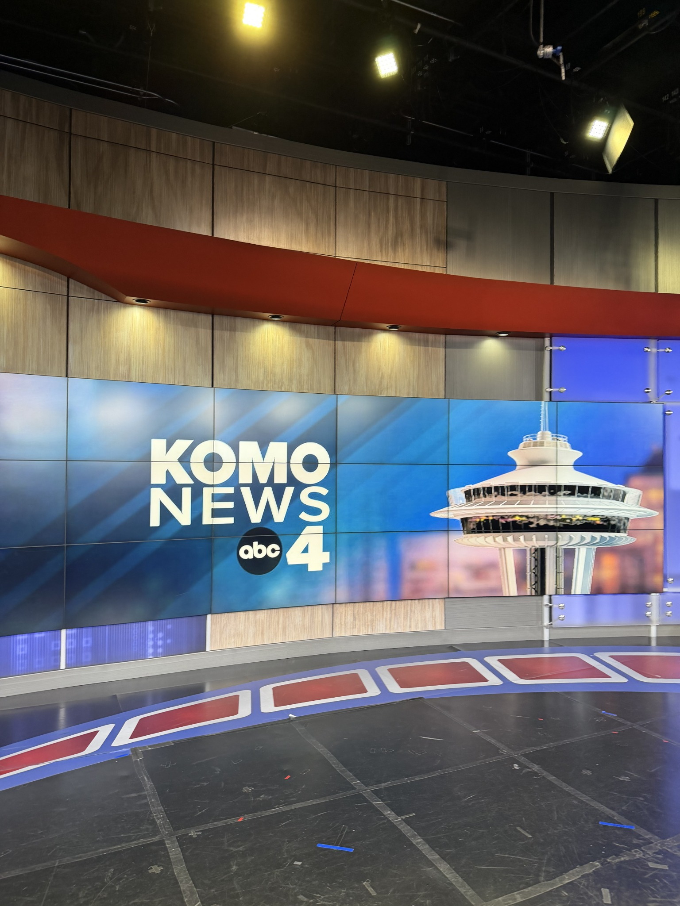
I worked with sales, marketing, promotions, and production teams to support the development and delivery of sponsorships and promotional campaigns across broadcast, digital, and community platforms.
Supported sponsorship proposals and promotional packages for programming, sports partnerships, and community campaigns.
Helped organize campaign elements across broadcast, digital, news, social, and community touchpoints.
Collaborated with internal teams and external partners on local sponsorship and brand integration initiatives.
Assisted with tracking sponsorship placements, organizing campaign clips, and preparing recap materials.
Joined production and Seattle Refined teams on location and participated in a client commercial shoot.
Developed a final internship concept exploring social media opportunities for KOMO Sales.
A few examples that show the range of work I supported — from community storytelling and sports sponsorships to local advertiser promotions.
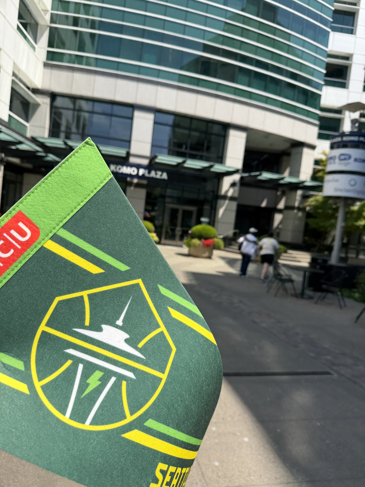
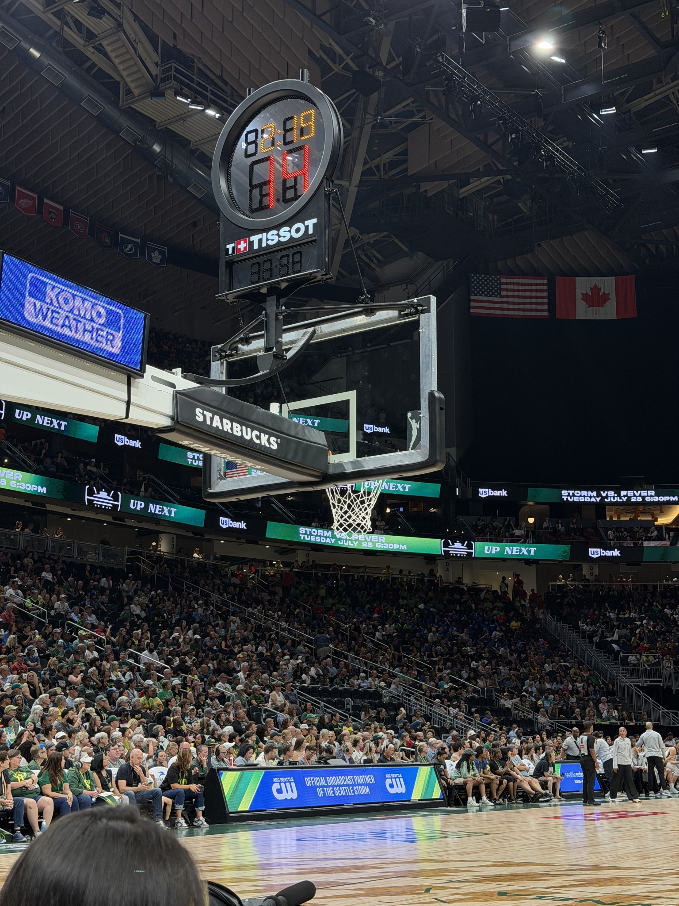
Collaborated on sponsorship tracking and counts, documenting partner integrations and campaign placements throughout the season. The selected images show the partnership’s brand presence at KOMO Plaza and in the game-day environment.
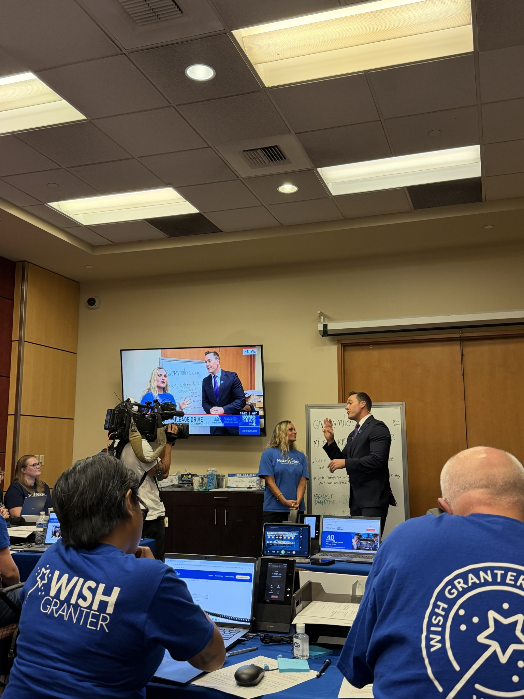
Collected and organized campaign clips to support recap and proof-of-performance documentation.
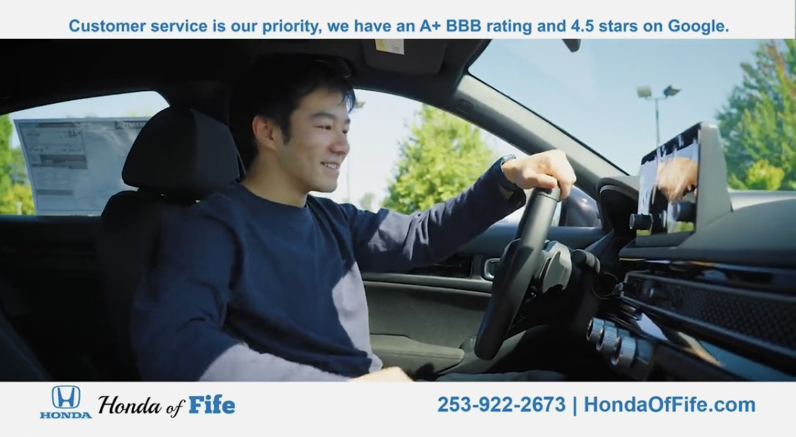
Participated in a client promotional shoot and appeared on camera, gaining hands-on experience with local advertiser content production.
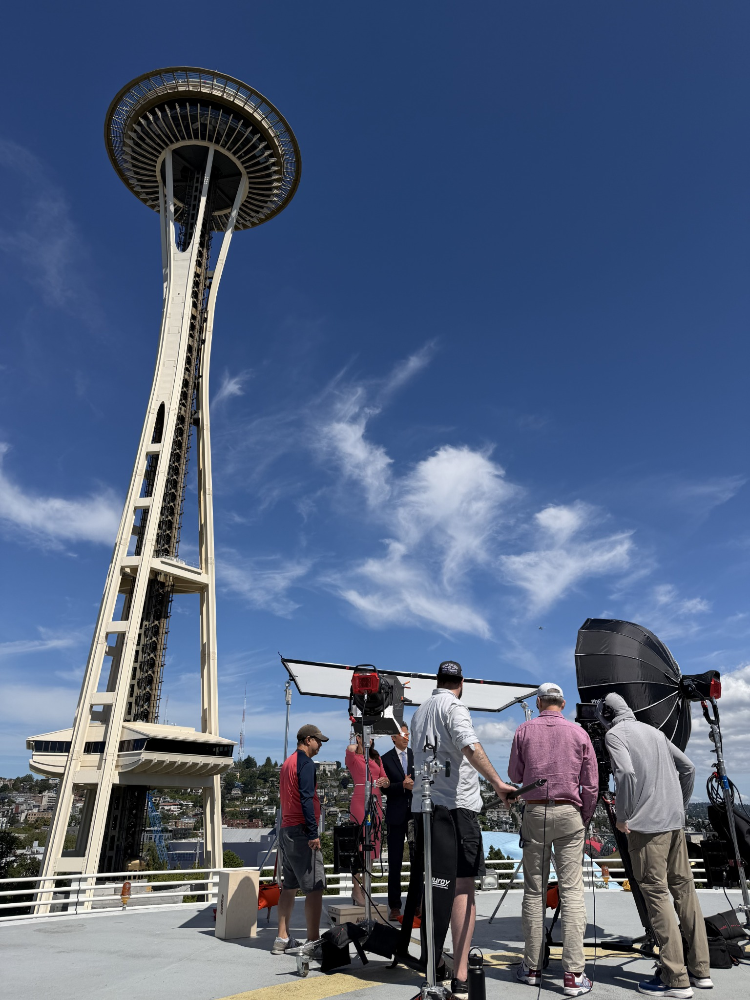
Joined the team on the rooftop for a Host ID shoot and observed the production process behind station branding and on-air promotion.
A selection of additional proposals, tracking assignments, and recap projects I completed or supported during the internship.
Supported sponsorship activity tracking and documentation of related placements.
Contributed to sponsorship materials for KOMO’s weekend events and weather forecast integration.
Supported a recap spanning broadcast, digital, news, and community campaign elements.
Supported recap materials for the Celebrity Steak-Out Dinner, Jacob Green Charity Golf Classic, Seattle Refined, ARC Seattle, and KOMO News.
Contributed to proposal materials for KUNS game show sponsorship opportunities.
Supported development of the 2026 KOMO PINK sponsorship proposal.
Organized campaign clips for recap and proof-of-performance support.
Contributed to internal and client-facing sponsorship proposal materials.
Assisted with materials for a Seahawks podcast sponsorship opportunity.
Worked with a teammate on sponsorship counts and partner integration tracking.
Proposal and recap materials were prepared for internal station or client use and are not displayed here because they contain non-public business information. The project descriptions above summarize my contributions without sharing confidential documents.
A business-facing social media concept designed to help local advertisers better understand KOMO’s capabilities and connect with its Sales team.
The concept identifies an opportunity for KOMO Sales to build a more visible business-facing presence, complementing KOMO News and Seattle Refined with content created for local businesses and marketing decision-makers.
It outlines a platform strategy, content pillars, and sample post concepts to make the team’s expertise and partnerships more discoverable.
Beyond project work, the internship was shaped by the people I learned from, the production spaces I visited, and the moments shared with the team.
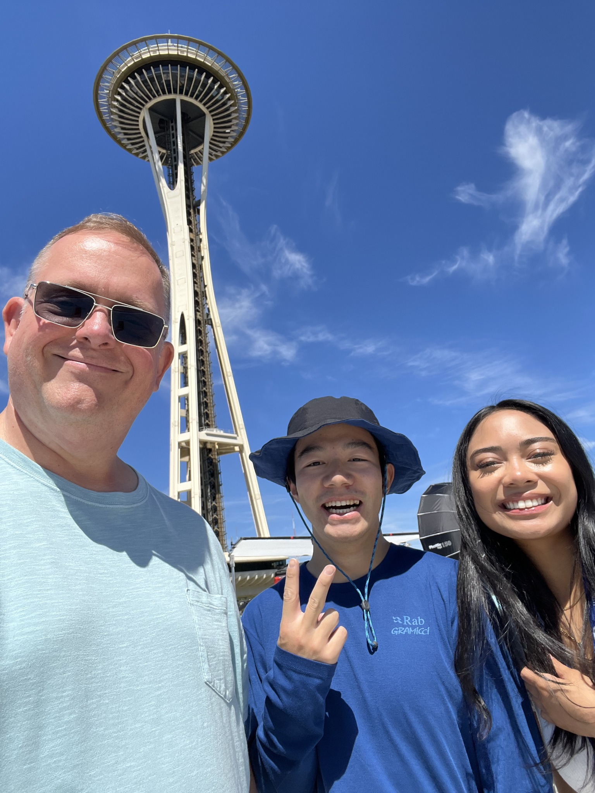
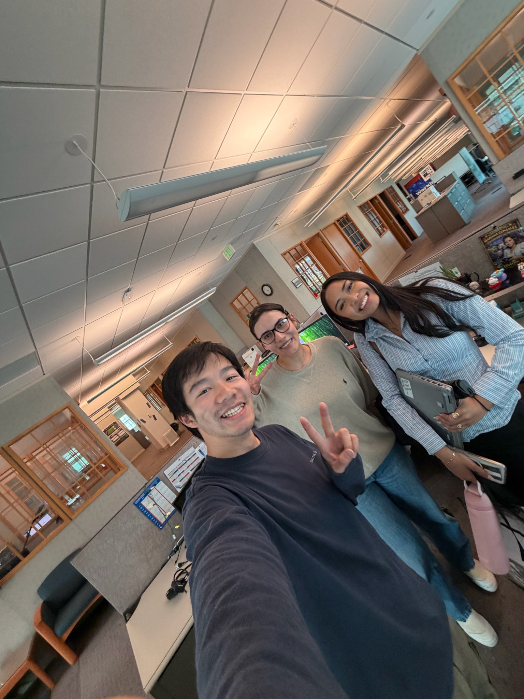
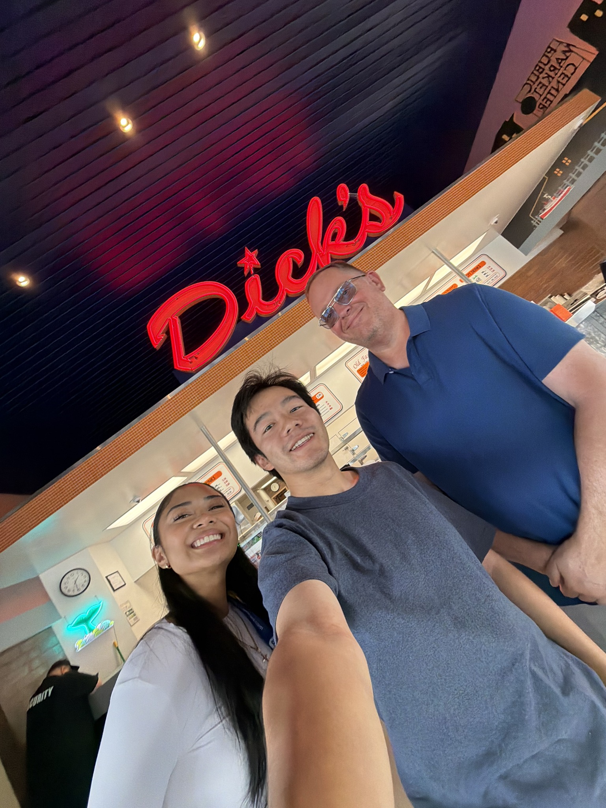
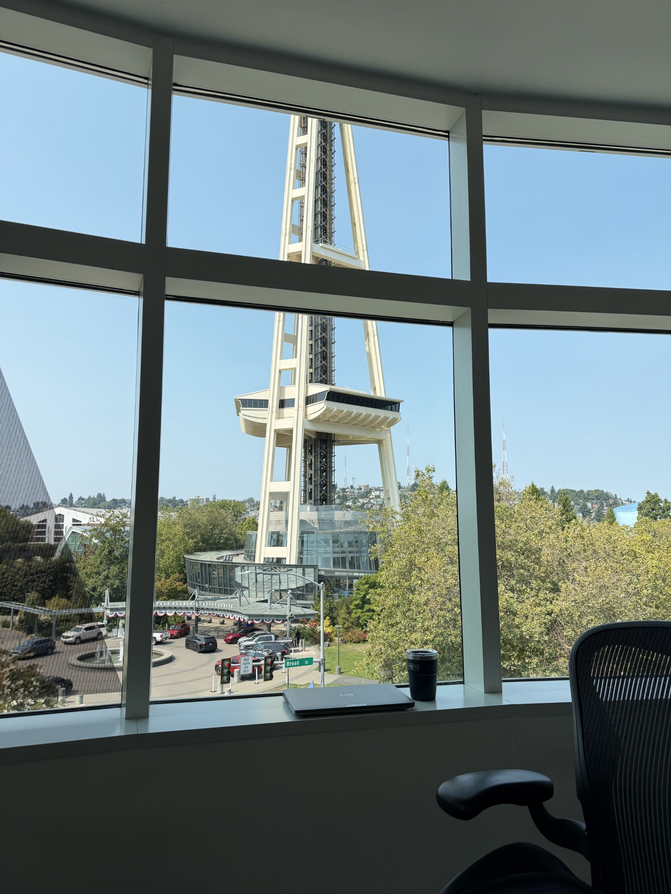
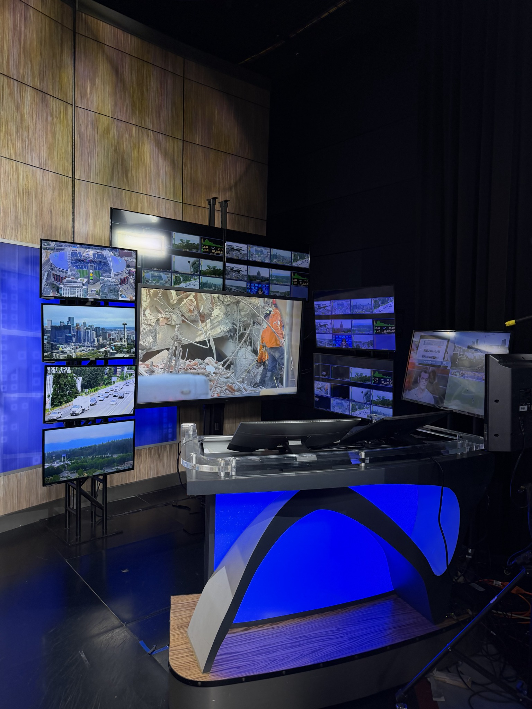
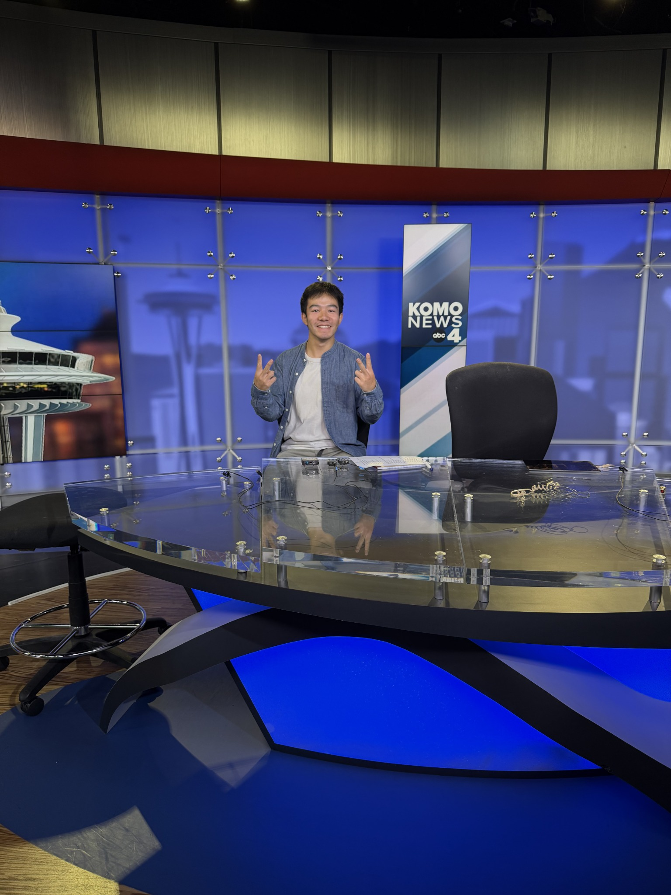
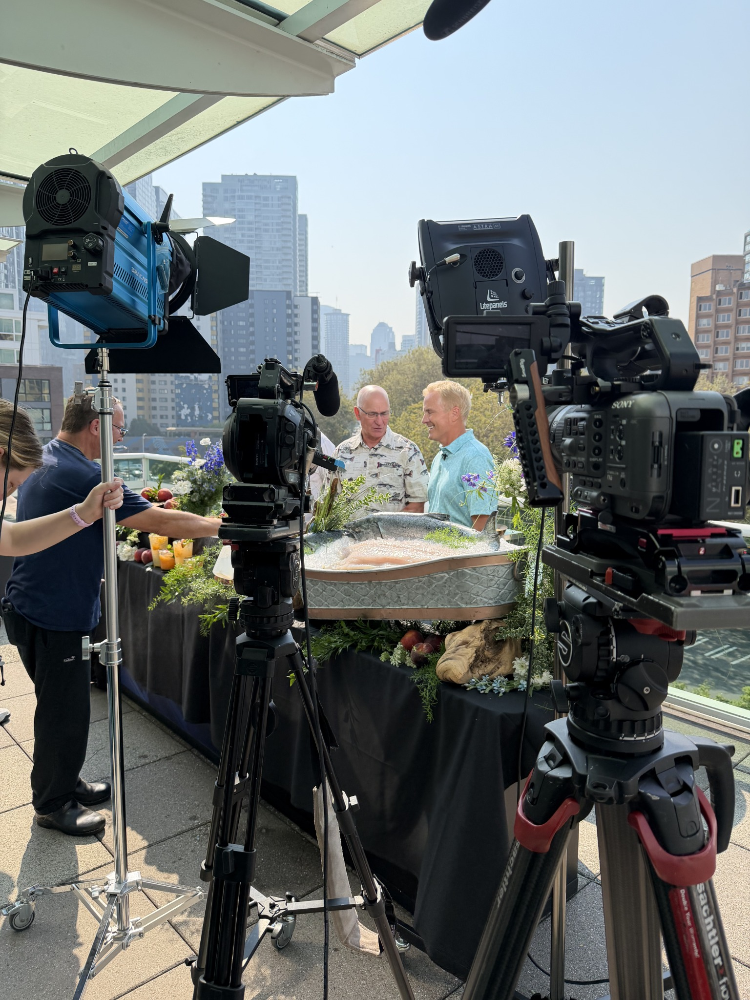
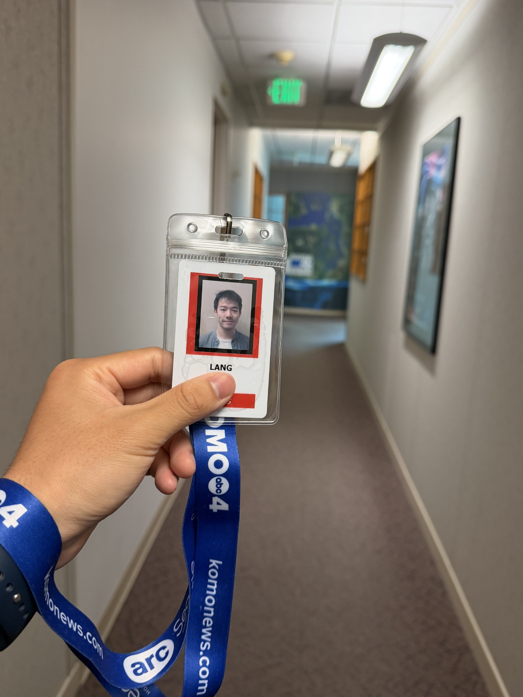
This internship gave me a closer look at how local media connects storytelling, advertising, partnerships, and community. I’m grateful to the KOMO teams who welcomed me into their work and gave me opportunities to contribute, collaborate, and learn.